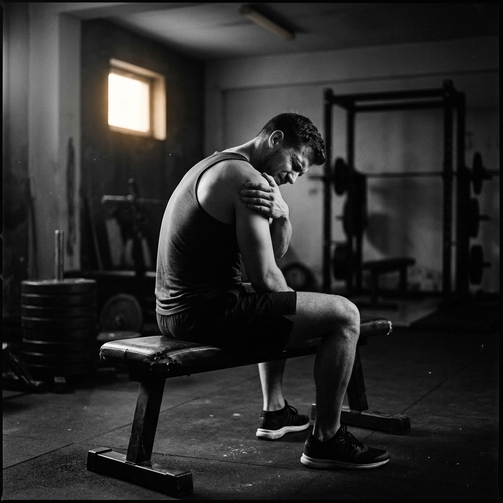
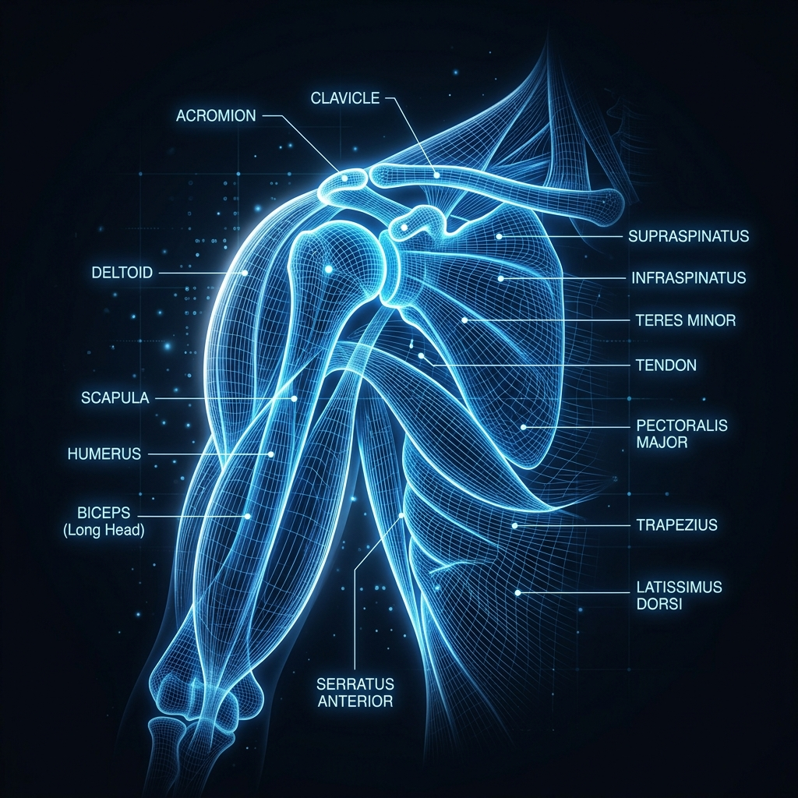

You trained shoulders three days ago. They still feel like someone filled them with wet concrete. You skip them anyway because you have a program to follow, grind through a mediocre session, wonder why your overhead press has been stuck for four months, and repeat the whole cycle next week.
Sound familiar.
The frustrating part is that you're probably not doing anything obviously wrong. You're training consistently, sleeping reasonably well, eating enough protein. On paper everything is fine. But shoulders are one of the most chronically under-recovered muscle groups in the gym and most people have no idea why. They just assume they're either not tough enough or not recovering fast enough and keep pushing through.

Neither of those is the problem.
The problem is that your shoulders are not one muscle. They never were. And the way most people train, track, and think about shoulder recovery treats them like one homogeneous blob that either needs rest or doesn't. That fundamental misunderstanding is why your overhead press isn't moving and why your shoulders feel beaten up more often than not.
This is going to get into some actual muscle anatomy and exercise science. Not the textbook version nobody reads. The version that changes how you think about every shoulder session you program from here on out.
First, what your shoulder actually is

The deltoid is the big muscle that sits over your shoulder joint and gives your shoulders their rounded shape. Most people know it has three parts: front, side, and rear. Anterior, lateral, and posterior if you want to sound like you read the textbook.
What most people don't think about is that these three heads are functionally almost separate muscles. They have different nerve innervations, different fiber type distributions, different roles in movement, and critically, different recovery demands. Training your front delts on a Monday does not meaningfully affect how recovered your rear delts are by Wednesday. They share a name and a general location on your body. That's about it.
And then there's the rotator cuff. Four muscles sitting underneath all of that. The supraspinatus, infraspinatus, teres minor, and subscapularis. These are not the muscles you feel burning during a lateral raise. They're the stabilizers. The quiet ones doing constant low-grade work during almost every upper body exercise you do. They don't get trained intentionally very often. They get fatigued constantly.
Then there's the serratus anterior. Sits on the side of your ribcage, connects to your shoulder blade, gets hammered during overhead pressing. Barely anyone knows it exists until it stops working properly.
The upper trapezius. The levator scapulae. The muscles around your shoulder blade that have to work every time you raise your arm above chest height.
Your shoulder during a single overhead press session is not one muscle working. It's a coordinated system of somewhere between eight and twelve distinct structures all contributing different amounts of force and fatigue depending on the exact angle, load, and range of motion you're using.
Now think about how you track shoulder recovery. You probably think "did shoulders Monday, should be fine by Thursday." One muscle, one recovery window, simple math.
That's the problem.
How different shoulder exercises load different structures
This is where it gets interesting.
Overhead press (barbell or dumbbell)
Anterior deltoid is the primary mover. It does the heavy lifting here. Lateral deltoid contributes but less than most people assume. Upper trapezius kicks in hard especially at the top of the range of motion. Rotator cuff works constantly throughout to keep the humeral head seated in the socket. Serratus anterior fires to rotate the scapula upward.
If you do heavy overhead pressing, your front delts and upper traps are cooked. Your rear delts are barely touched.
Lateral raises
Lateral deltoid is the target. But here's what almost nobody knows: the anterior deltoid also contributes significantly to lateral raises, especially as the weight gets heavier and you start compensating to get it up. Studies have consistently shown that at higher loads, lateral raises become a front delt exercise with a lateral delt assist rather than a pure lateral delt movement.
So if you're doing heavy overhead press followed by heavy lateral raises, you're hitting your front delts twice and probably not realizing it.
Face pulls
Rear deltoid. Infraspinatus and teres minor from the rotator cuff. Rhomboids and mid trapezius. This is the one exercise in most people's programs that actually addresses the posterior shoulder and upper back as a system. If you're doing it correctly with the rope at eye level and externally rotating at the top, your rotator cuff is getting meaningful work.
Rear delt flyes
Posterior deltoid primarily. Infraspinatus assists. Much more isolated than face pulls. Lower rotator cuff involvement, higher rear delt isolation.
Upright rows
Lateral deltoid and upper trapezius. Also loads the supraspinatus, which is the most commonly injured rotator cuff muscle. There is a reason physios are not enthusiastic about upright rows. The supraspinatus gets compressed under the acromion at the top of the movement. Fine in small doses for healthy shoulders. Worth knowing about if you do these frequently.
Cable lateral raises
Cleaner lateral delt isolation than dumbbell lateral raises because the cable provides constant tension through the full range of motion. Less anterior delt compensation at the bottom of the movement. Better choice if you're trying to actually target the lateral head rather than just move weight.
Arnold press
Hits all three deltoid heads across the range of motion due to the rotation component. More comprehensive than a standard overhead press but also means more cumulative shoulder fatigue from a single exercise.
Push ups and bench press
Not shoulder exercises but absolutely shoulder exercises. Your anterior deltoid is a significant contributor to any horizontal pushing movement. Someone doing flat bench, incline bench, and cable flyes in the same week is hammering their front delts three times and often programming a separate shoulder day on top of that where they do overhead pressing and lateral raises. Front delts get hit five or six times a week. Rear delts get hit once if they're lucky.
This is the most common shoulder programming mistake and it creates a specific imbalance that shows up as chronic anterior shoulder tightness, internal rotation dominance, and that slightly hunched forward posture you see on a lot of dedicated gym-goers.
The anterior-posterior imbalance problem
Let's talk about this specifically because it's the most common shoulder issue among people who train consistently and have been for years.
The front of your shoulder gets loaded by every pushing movement you do. Bench press, overhead press, push ups, dips, cable crossovers, chest flyes. Every single one of them loads the anterior deltoid and the internal rotators of the shoulder.
The back of your shoulder gets loaded by pulling movements. Rows, pull ups, face pulls, rear delt work. These are typically a smaller proportion of most people's training because pushing is more intuitive and more visible in the mirror.
Over months and years of this imbalance, the anterior deltoid and pectoralis minor get relatively tight and strong. The posterior deltoid, external rotators, and lower trapezius get relatively weak and lengthened. Your shoulder starts to sit slightly forward in its socket. Your natural resting posture shifts.
The result is not just aesthetic. A shoulder sitting forward in its socket has less mechanical space for the rotator cuff tendons to move through during overhead work. That's how impingement starts. Not from one bad session but from a slow accumulation of imbalance that changes the resting position of your joint over years.
None of this shows up in your workout log. You've been logging every set of bench press and overhead press faithfully for two years. The log looks great. The imbalance is invisible.
Why shoulder recovery is slower than you think
The deltoid is a pennate muscle with a high proportion of slow-twitch type one fibers, particularly in the lateral and posterior heads. Slow-twitch fibers are more fatigue-resistant during training, which means you can do a lot of volume on lateral raises without failing the set. The muscle just keeps going. Great for training volume. Means you probably do more total work on your shoulders than you realize.
The downside is that slow-twitch fiber damage from high rep training has a different recovery profile than the fast-twitch damage you get from heavy compound lifting. It tends to produce more prolonged low-grade soreness rather than acute severe soreness. Your shoulders don't scream at you the day after a high volume lateral raise session. They just feel vaguely stiff and tired for three or four days in a way that's easy to dismiss.
The rotator cuff muscles are even slower to recover because they're constantly working as stabilizers during almost every upper body session regardless of whether you're specifically targeting them. Your rotator cuff is doing work during your bench press, your rows, your overhead press, your pull ups, and your push ups. It gets loaded repeatedly across your entire upper body training week without ever getting a true recovery window unless you plan for one specifically.
This is why shoulder injuries are so disproportionately common in people who train seriously. The rotator cuff accumulates fatigue across the entire week and most people have no visibility into that accumulation. They just know their shoulder started hurting one day during overhead press and they have no idea why because they were being responsible and only training shoulders once a week.
The shoulder session is not where the rotator cuff injury came from. The cumulative load from five other sessions that week, that month, that year, is where it came from.
The frequency question
How often should you train shoulders.
The honest answer is that it depends on which part of your shoulder and what else you're training that week.
Your anterior deltoid probably doesn't need a single dedicated exercise if you're doing any meaningful amount of horizontal and vertical pressing. It's already getting hit. Adding overhead press on top of bench press is fine. Adding lateral raises on top of overhead press is fine. Adding another set of front raises is probably overkill for most people.
Your lateral deltoid can handle more frequency than most people give it. It responds well to moderate loads and higher rep ranges done often. Three times a week of lateral raises is not excessive if you're managing total volume sensibly.
Your posterior deltoid and external rotators are almost certainly undertrained relative to everything else in your program. Most people could do rear delt and face pull work every single training day and still not be overtrained in that area. The muscles are just not getting enough stimulus to even approach their recovery ceiling.
The rotator cuff needs to be treated as something that gets trained indirectly through everything you do rather than something with its own dedicated day. The question to ask is not whether you trained rotator cuff this week but whether the cumulative shoulder load from all your sessions this week has given the stabilizers enough time to recover before you go again.
Most people have never asked that question. They just know shoulder day is Sunday.
What actual shoulder recovery looks like by subzone
Here's a rough framework for how long different shoulder structures take to recover after a hard training session. These are general ranges, not precise numbers, because individual recovery varies based on training age, sleep, nutrition, and genetic factors.
Anterior deltoid after heavy overhead pressing: 48 to 72 hours for trained individuals. Longer if you also did significant horizontal pressing in the same session or earlier that week.
Lateral deltoid after high volume lateral raises: 24 to 48 hours. Recovers relatively quickly due to high slow-twitch fiber composition and typically lower loads used.
Posterior deltoid after focused rear delt work: 24 to 48 hours. Similar profile to lateral deltoid.
Rotator cuff after a heavy overhead pressing session: 48 to 96 hours. Longer recovery than the prime movers because the stabilizers work at lower intensities for longer durations and accumulate fatigue differently.
Upper trapezius after heavy pressing and shrugs: 48 to 72 hours.
Serratus anterior after heavy overhead work: 48 to 72 hours. Often the forgotten muscle in shoulder recovery discussions.
Now look at a typical push pull legs program. Push day is Monday. Upper body pull is Wednesday. Push day again is Friday.
Monday push day hits anterior deltoid, lateral deltoid, upper trapezius, rotator cuff, serratus.
Wednesday pull day hits posterior deltoid, rotator cuff again because it stabilizes during rows and pull ups, upper trapezius again because it's involved in most rowing movements.
Friday push day. The anterior delt has had four days. It's probably fine. The rotator cuff has had two days since Wednesday and four days since Monday. Whether that's enough depends on the total volume across both sessions.
Most people on PPL just train Friday because it's Friday. The rotator cuff doesn't care about your program structure.
The thing nobody tells you about shoulder injuries
Shoulder injuries in gym-goers rarely come from one bad session. They come from chronic low-level overload of the stabilizing structures accumulated over months.
The specific session where something finally hurts is usually not the cause. It's the final straw. The rotator cuff tendon that's been taking 15% more cumulative load than it can recover from every week for six months finally communicates its displeasure during an overhead press that looked exactly like every other overhead press you've done.
The solution to avoiding shoulder injuries is not being more careful during any single session. It's having actual visibility into how much cumulative load your shoulders are accumulating across your entire training week and whether the stabilizing structures specifically are getting adequate recovery time.
Which brings us to the actual problem. Nobody has had that visibility. Until recently.
Why this is exactly the problem Valen was built to solve
Everything above is real and well-established in exercise physiology. The SRA curve, subzone fatigue differences, rotator cuff accumulation across sessions, anterior-posterior imbalance. This isn't fringe science. It's how your shoulder actually works.
The problem has always been that applying this knowledge in practice requires either a sports scientist on retainer or a spreadsheet that would make most people close the tab immediately.
Valen automates all of it.
Every exercise you log gets mapped to its specific muscle subzones. Overhead press loads anterior deltoid as primary, lateral deltoid as secondary, upper trapezius and rotator cuff as support structures. That's not a generic tag. That's the actual biomechanical mapping built into every exercise in the library.
After each session, Valen calculates fatigue per subzone using the SRA model and starts decaying it in real time. When you open the app the next day, you don't see "shoulders: recovering." You see anterior deltoid at 45%, lateral deltoid at 78%, posterior deltoid at 91%, with time estimates for when each one hits full recovery.
That's the information that changes how you program.
If your lateral and posterior delts are green but your anterior delt is still red, you know you can do rear delt and lateral raise work today but you should leave the pressing for tomorrow. You're not guessing anymore. You're not going by feel and hoping for the best. The app is running the math your sports scientist would run if you had one.
The volume balance feature shows you exactly the push-pull ratio and anterior-posterior split across your training week. If you've been accidentally hammering front delts five times a week while your rear delts get hit once, that shows up clearly. Not as a lecture. Just as numbers. You can see the imbalance and fix it.
The weekly planner takes your preferred split and your real-time subzone fatigue state and suggests what to train each day. If your shoulders are in a state where overhead pressing today would be loading a structure that hasn't fully recovered, it tells you. If Friday is actually your peak readiness day for shoulder pressing this week because of how your sessions fell, it tells you that too.
For the specific problem of rotator cuff accumulation across the week, the CNS strain and systemic fatigue indicators add another layer. Even when individual muscle subzones look recovered, Valen tracks whether your overall training load is approaching a point where your stabilizing systems need a genuine rest day rather than another training session.
None of this requires a wearable. No heart rate monitor, no HRV tracker, no sleep sensor. Just your workout log and a model that's been built carefully around how muscle recovery actually works rather than how it's convenient to assume it works.
If you've been confused about why your shoulders never feel fully fresh, why your overhead press stalls despite consistent training, or why shoulder discomfort keeps creeping in even when you're doing everything right by conventional wisdom, the answer is almost certainly in the subzone detail that your current tracking setup has no way to see.
Valen is free on Android. The heatmap and subzone recovery tracking are available without paying anything. You'll see the picture of your shoulder recovery within your first week of logging and it will probably explain a few things that have been confusing you for a while.